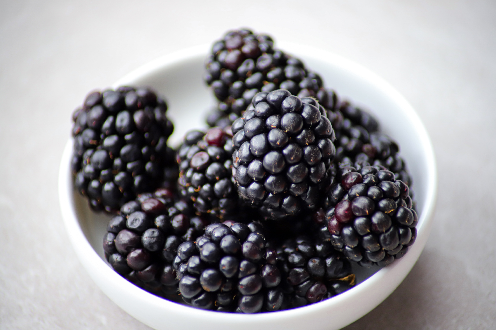

Here you will find more information about all kind of
berries. I believe you will learn a lot about these healthy
fruits. It took me a lot of effort to reseach it but I did,
just for you.
Articles
These Articles are all about the benefits of berries, the most common berries are listed below.
Strawberries
Author
Julio Paredes
The heart-shaped silhouette of the strawberry is the first clue that this fruit is good for you. These potent little packages protect your heart, increase HDL (good)
cholesterol, lower your blood pressure, and guard against cancer.
Blackberries

Author
Julio Paredes
There is an argument to be made for calling blackberries a superfood. They are high in beneficial vitamins and minerals, fiber, and antioxidants. They’re low in calories, carbs,
and fat.
Goosberries
Author
Julio Paredes
These fruits are rich in antioxidants, such as phytonutrients, and vitamins E and C, which may help protect your brain and fight aging, type 2 diabetes, cancer, and heart disease.
Cranberries
Author
Julio Paredes
Small, but mighty, this Superfruit promotes many unique health benefits from the inside out. Among the more well-known benefits are the anti-bacterial properties that help prevent certain bacteria
from sticking within the body and causing urinary tract infections.
Blueberries
Author
Julio Paredes
These berries are also high in potassium and vitamin C, making them the top choice of doctors and nutritionists.
Not only can they lower your risk of heart disease and cancer, they are also anti-inflammatory.
Raspberries
Author
Julio Paredes
They provide potassium, essential to heart function, and proven to lower blood pressure. The omega-3 fatty acids in raspberries can help prevent stroke and heart disease. They also contain a mineral called manganese, which
is necessary for healthy bones and skin and helps regulate blood sugar